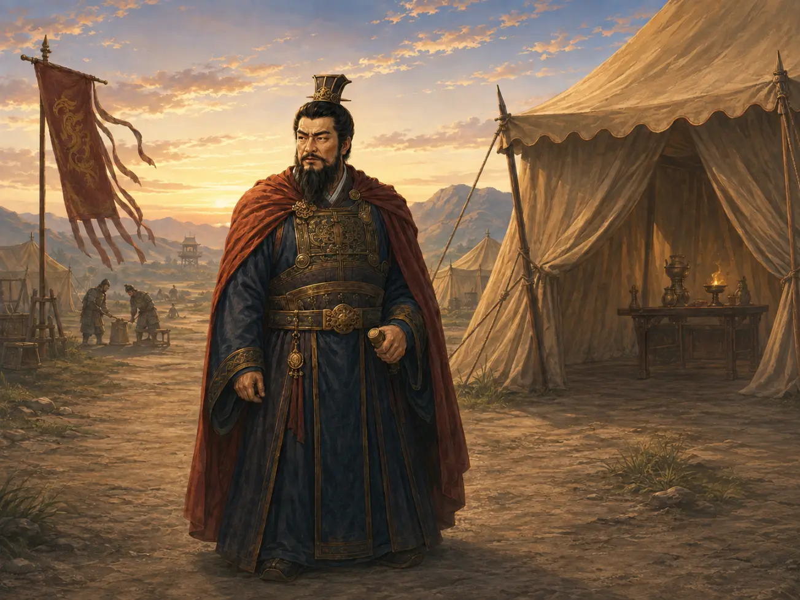
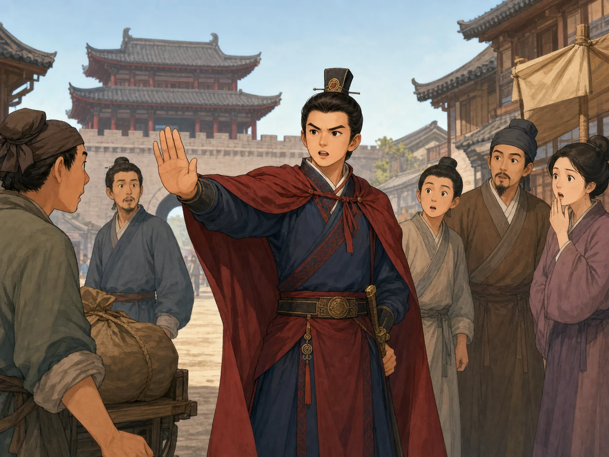
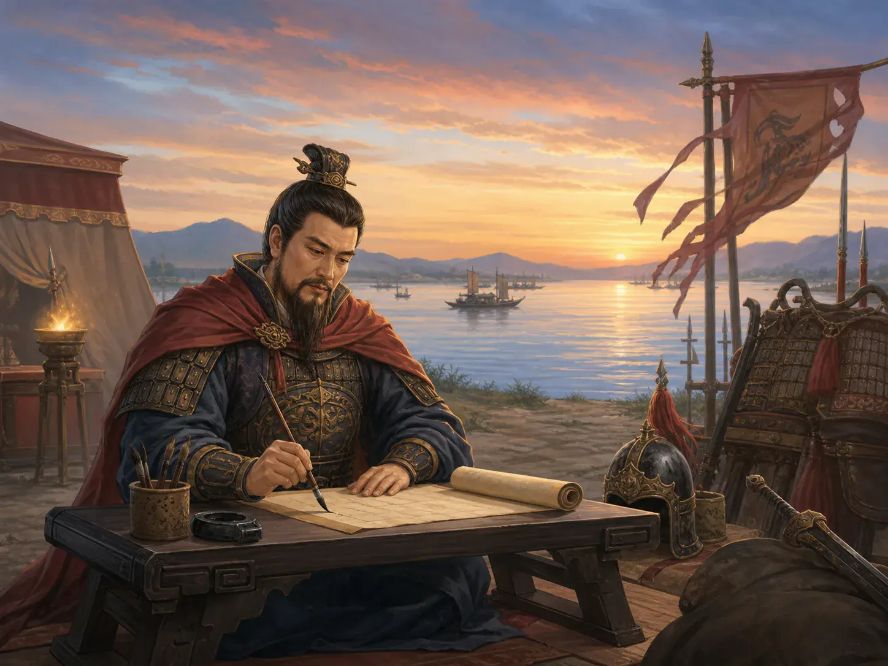

曹操：带兵的诗人
Cao Cao: The Commander with a Poet's Brush
Page 1
天下乱了
The World Falls Apart

Cao Cao stands in camp with soldiers and people who help him make plans.
在Cáo Cāo · 东汉末年的政治家、军事家和诗人。出生以前，Hàn cháo · 从公元前206年延续到公元220年的中国重要朝代。的皇帝已经统治了很长时间。可是，等曹操长大时，这个庞大的国家开始裂开。皇帝还戴着皇冠，却已经没有力量让各地都听从命令。
各地的将领组建自己的军队，争抢城市、土地和粮食。一座城春天可能被一支军队占领，秋天又换了主人。农田被毁，许多家庭逃离家园，路上到处都是士兵。
曹操就是在这样的世界里长大的。后来，他会带领大军，也会掌握汉朝大部分权力。可在那以前，他只是都城里一名刚刚得到工作的年轻官员。
Long before Cáo Cāo · 曹操 · A powerful leader, commander, and poet at the end of the Eastern Han dynasty. was born, Han emperors had ruled much of China. But by the time he was a young man, that huge country was coming apart. The emperor still wore a crown, but he could no longer make leaders across the country obey him.
Generals raised their own armies and fought over cities, land, and grain. A city might belong to one army in the spring and another by autumn. Farms burned, families fled their homes, and soldiers filled the roads.
Cao Cao grew up in this broken world. One day he would lead great armies and hold much of the Han government's power. Before any of that happened, he was simply a young officer with a new job in the capital city.
Page 2
带兵以前，他管理街道
Before the Armies

A young Cao Cao stops someone who has broken a city rule.
在曹操带领大军以前，他曾是都城Luòyáng · 中国古都，白马寺位于这里。的一名年轻官员，负责管理一片街区。城里规定，到了夜里某个时间，人们就不能随便在街上走动。
一天，一位很有权势的宫廷官员的叔叔违反了夜间规定。很多年轻官员可能不敢得罪这样的人，曹操却照样处罚了他。
消息很快传开：有权有势的亲友，也不能让人躲过曹操的处罚。这件事让一些人敬佩他，也让另一些人害怕他。
几年以后，汉朝越来越乱。曹操组建了一支军队，成为许多争夺权力的领兵者之一。
后来，他把年轻的皇帝接到一座自己控制的城市。朝廷又能用皇帝的名义发出命令，可保护皇帝的士兵听曹操指挥。有人说曹操救了皇帝，也有人说他利用皇帝的名义扩大自己的权力。这两句话都有一部分事实。
Before Cao Cao commanded great armies, he was a young officer in Luòyáng · 洛阳 · An ancient Chinese capital and the home of White Horse Temple., the capital city. He was responsible for keeping order in one part of town. After a certain hour at night, people were not allowed to wander through the streets.
One night, the uncle of a powerful palace official broke the rule. Many young officers might have been afraid to punish someone with such an important relative. Cao Cao punished him anyway.
Word spread quickly. Powerful connections would not help someone escape Cao Cao's punishment. Some people respected him for that. Others began to fear him.
A few years later, the Hàn cháo · 汉朝 · A major Chinese dynasty that lasted from 206 BCE to 220 CE. fell deeper into chaos. Cao Cao raised an army and became one of many commanders fighting for control.
He later brought the young emperor to a city he controlled. The government could once again send out orders in the emperor's name, but the soldiers protecting the emperor answered to Cao Cao. Some people said Cao Cao had rescued the emperor. Others said he was using the emperor's name to increase his own power. There was some truth in both views.
Page 3
黑夜里的粮仓
The Grain Camp in the Night
汉朝还没有灭亡，皇帝也仍然在位，可他已经无法控制大部分地方。北方出现了两支特别强大的军队。一支由曹操带领，另一支由袁绍带领。袁绍来自很有势力的家族，控制的土地更多，士兵也比曹操多。
两支军队在官渡附近对峙了很久。曹操这边的粮食越来越少，他一度考虑退兵。就在这时，袁绍的一位谋士离开袁绍，把一个重要消息告诉曹操：袁绍的大批粮食放在一座守卫不多的营地里。
曹操马上带着一小队士兵连夜出发，烧掉了那里的粮食。袁绍的大军突然没有足够的食物，军营里乱了起来。曹操趁机进攻，赢得了这场关键的战役。
这场胜利没有立刻结束所有战争，却让曹操成为北方最强大的领兵者。无论一支军队有多少人，没有粮食就无法继续打仗。
The Han dynasty had not ended. The emperor was still on the throne, but he could no longer control most of the country. In the north, two especially powerful armies rose. Cao Cao led one. Another commander, Yuan Shao, led the other. Yuan Shao came from an important family, controlled more land, and had far more soldiers than Cao Cao.
The two armies faced each other near a place called Guandu. Cao Cao's food began to run low, and he thought about pulling back. Then one of Yuan Shao's advisers left Yuan Shao and brought Cao Cao important news: most of Yuan Shao's grain was stored in a camp with only a small guard.
Cao Cao immediately led a small group through the night and burned the grain. Yuan Shao's huge army suddenly lacked enough food, and panic spread through the camp. Cao Cao attacked and won the key battle.
The victory did not end every war, but it made Cao Cao the strongest military leader in northern China. No matter how many soldiers an army has, it cannot keep fighting without food.
Page 4
田地里又长出了粮食
Grain Grew in the Fields Again
官渡之战以后，曹操逐渐控制了北方大片地区。多年的战争让许多农田荒了，水渠也坏了。没有粮食，百姓没有饭吃，军队也走不了多远。
曹操让士兵和种田的百姓重新耕种荒地、修理水渠。收获的粮食装进粮仓，供应城镇和军队。他也把重要的工作交给自己认为有本领的人，即使他们没有显赫的家族。
可是，战争并没有停下来。在徐州，曹操的军队攻打城镇，杀死了士兵，也杀死了许多没有参加战斗的人。一个地方的农民重新回到田里，另一个地方的家庭却在躲避曹操的军队。
曹操看见的世界里，既有重新长出的粮食，也有战争以后空荡荡的村庄。后来，这些景象也出现在他的诗里。
After Guandu, Cao Cao gradually took control of much of northern China. Years of war had left many fields empty and canals broken. Without grain, families could not eat and armies could not march very far.
Cao Cao ordered soldiers and farming families to plant abandoned land and repair canals. Their harvests filled storehouses with grain for towns and armies. He also gave important work to people he thought were capable, even if they did not come from famous families.
But the fighting did not stop. In Xu Province, Cao Cao's army attacked towns and killed soldiers as well as many people who were not fighting. In one place, farmers returned to their fields. In another, families ran from Cao Cao's soldiers.
Cao Cao saw a world with grain growing again and villages left empty by war. Later, some of those sights appeared in his poems.
Page 5
铠甲旁边的毛笔
A Brush Beside the Armor

When the fighting pauses, Cao Cao sits down to write.
曹操不只会带兵。他也是一位重要的诗人，而且有二十多首诗流传到今天。
在《观沧海》里，他写大海翻动，日月和星星仿佛从海水中升起。在另一首诗里，他写一匹年老的战马。马虽然已经老了，心里却还想着奔跑千里。
这匹老马很像晚年的曹操：年纪越来越大，仍然有许多没有完成的计划。他还写过战争之后空荡荡的村庄，让人看见那个时代留下的伤口。
营地里放着铠甲和刀剑，远处的旗子在风里响。战事停下来时，曹操低下头，拿起毛笔，把大海、老马和乱世写进诗里。
Cao Cao did more than lead soldiers. He was also an important poet, and more than twenty of his poems have survived.
In Viewing the Sea, he wrote of rolling water, with the sun, moon, and stars seeming to rise from the sea. In another poem, he wrote about an old warhorse. The horse had grown old, but it still dreamed of running a thousand miles.
The old horse sounds a little like Cao Cao himself: growing older, but still carrying great plans. He also wrote of empty villages after war, giving readers a glimpse of the wounds his age had left behind.
Armor and swords lay around the camp, and flags snapped in the wind. When the fighting paused, Cao Cao picked up his brush and wrote about the sea, the old horse, and the broken world around him.
白脸属于舞台
The White Face Belongs to the Stage
曹操去世前，汉朝皇帝给了他“魏王”的称号。皇帝是最高的统治者；王可以管理很大的地方，却仍然应该听命于皇帝。曹操活着时没有使用“皇帝”这个称号。他去世以后，儿子曹丕才结束汉朝，成为魏国的皇帝。
几百年以后，小说和戏曲把曹操写成了一个很有名的坏人。jīngjù · 结合唱、念、做、打的中国戏曲形式。演员扮演曹操时，常常画一张白脸，让观众一眼就知道：这个人物聪明、危险，而且很难猜。
白脸是舞台上的记号，不是曹操真正的样子。历史里的曹操让北方一些地方重新安定，寻找有本领的官员，也留下了好诗。他同时发动战争、处死对手，并让许多无辜的人失去生命。
在舞台上，一张画好的脸可以用一秒钟告诉我们谁是坏人。真正的历史需要更长的时间。曹操从年轻官员走到魏王，每一步都留下了值得记住的事情，也留下了不能忽略的伤害。
Before Cao Cao died, the Han emperor gave him the title King of Wei. An emperor was the highest ruler. A king could control a large region but was still supposed to serve the emperor. Cao Cao never used the title emperor while he was alive. After he died, his son Cao Pi ended the Han dynasty and became emperor of Wei.
Hundreds of years later, novels and plays turned Cao Cao into a famous villain. In jīngjù · 京剧 · A form of Chinese opera combining song, speech, movement, and stylized combat., the actor playing Cao Cao often wears white face paint. The color tells the audience at once: this character is clever, dangerous, and difficult to trust.
The white face is a sign used onstage. It is not Cao Cao's real face. The Cao Cao of history helped some parts of northern China become stable again, searched for skilled officials, and left behind powerful poems. He also began wars, ordered executions, and caused the deaths of many innocent people.
Onstage, a painted face can tell us who the villain is in one second. Real history takes longer. As Cao Cao rose from a young city officer to King of Wei, he left achievements worth remembering—and suffering that should not be forgotten.